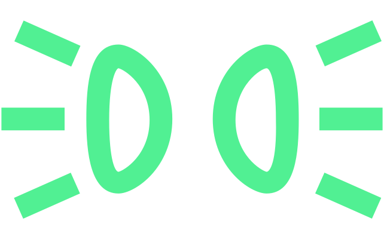

Allumer automatiquement la lumière lorsqu'il fait noir
Les feux de croisement et de position s’allument ou s’éteignent automatiquement en fonction des conditions de luminosité et du fonctionnement du véhicule (immobilisation/conduite).
Allumer automatiquement les feux de croisement lorsqu'il pleut
Les feux de croisement s'allument automatiquement après l'enclenchement des essuie-glaces.
L’allumage automatique de l’éclairage est indiqué par le symbole 